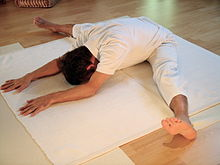
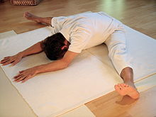

left-right symmetric
https://en.wikipedia.org/wiki/Upavi%E1%B9%A3%E1%B9%ADa_Ko%E1%B9%87%C4%81sana


seated wide-leg, back perpendicular to floor
| Current pose: seated wide-leg, torso forward bend | Adjacent poses: seated wide-leg, back perpendicular to floor | |
|
Upavista Konasana left-right symmetric https://en.wikipedia.org/wiki/Upavi%E1%B9%A3%E1%B9%ADa_Ko%E1%B9%87%C4%81sana  |
seated wide-leg, back perpendicular to floor |